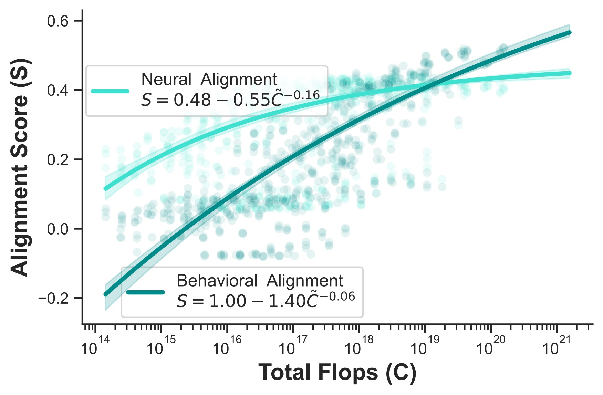
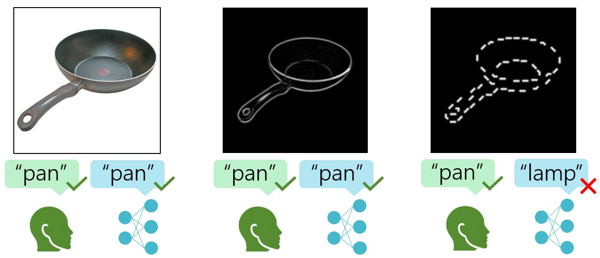
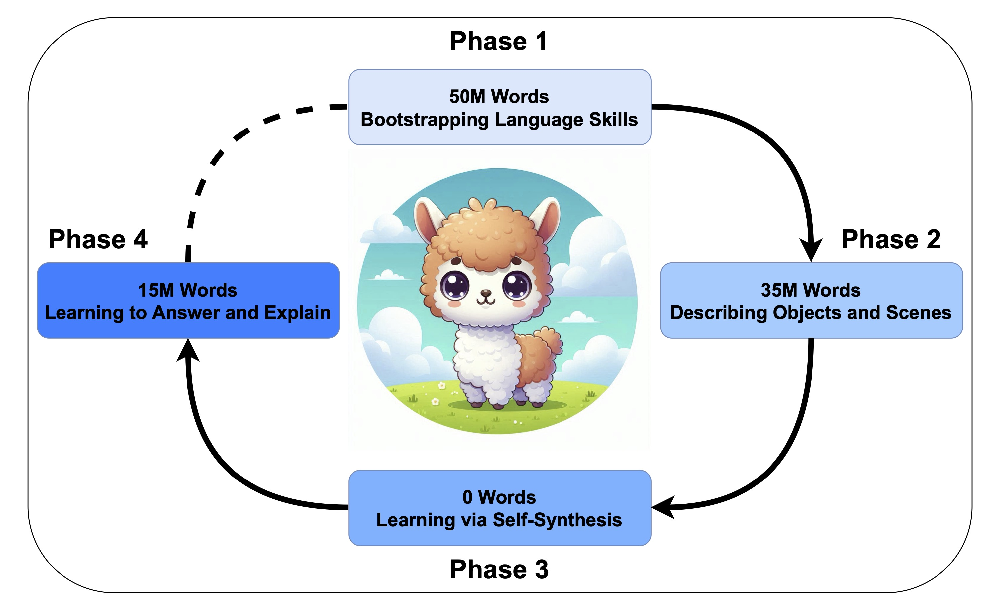
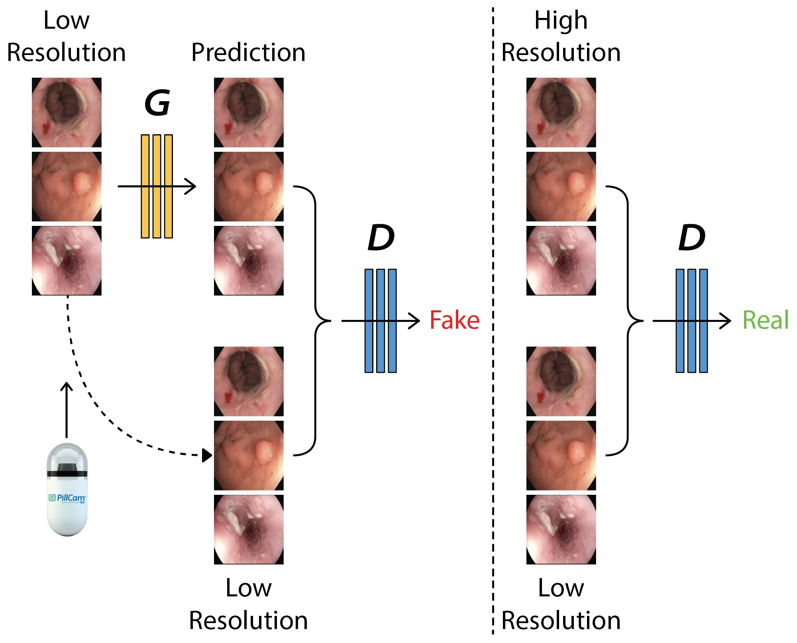

|
Abdulkadir Gokce I am a first-year Ph.D. student in Computer Science at the Swiss Federal Institute of Technology Lausanne (EPFL), where I am advised by Martin Schrimpf. My research focuses on building artificial models of perception. Previously, I earned my master's degree at EPFL and my bachelor's in Electrical & Electronics Engineering and Mathematics at Bogazici University. I was fortunate to gain research experience at ETH Zurich, MIT, and Nanyang Technological University (NTU). Email / Google Scholar / Github / Twitter / Bluesky |

|
ResearchMy research investigates the extent to which current deep learning models can capture neural and behavioral signals, and aims to develop new modeling strategies that expand these capabilities. I am particularly focused on building scalable, multimodal models of human perception that integrate diverse neurocognitive datasets. |
|  |
Scaling Laws for Task-Optimized Models of the Primate Visual Ventral Stream
Abdulkadir Gokce, Martin Schrimpf ICML, 2025 [Spotlight, Top 3%] We systematically explored scaling laws for primate vision models and discovered that neural alignment stops improving beyond a certain scale, even though behavior keeps aligning better. |
|  |
Contour Integration Underlies Human-Like Vision
Ben Lonnqvist, Elsa Scialom*, Abdulkadir Gokce*, Zehra Merchant, Michael Herzog, Martin Schrimpf ICML, 2025 We find that contour integration, a core feature of human object recognition, emerges in models only at large scales and correlates with improved shape bias. |
|  |
Dreaming Out Loud: A Self-Synthesis Approach For Training Vision-Language Models With Developmentally Plausible Data
Badr AlKhamissi*, Yingtian Tang*, Abdulkadir Gokce*, Johannes Mehrer, Martin Schrimpf BabyLM Challenge, at CoNLL 2024 Inspired by human cognitive development, our BabyLLaMA model learns language and vision jointly through a self-synthesis loop, generating its own training data from unlabeled images. |
|  |
EndoL2H: Deep Super-Resolution for Capsule Endoscopy
Yasin Almalioglu, Kutsev Bengisu Ozyoruk, Abdulkadir Gokce, Kagan Incetan, Guliz Irem Gokceler, Muhammed Ali Simsek, Kivanc Ararat, Richard J Chen, Nicholas J Durr, Faisal Mahmood, Mehmet Turan IEEE Transactions on Medical Imaging EndoL2H enhances capsule endoscopy images up to 12x using a spatial attention-guided GAN, outperforming existing methods in perceptual quality and clinical relevance. |